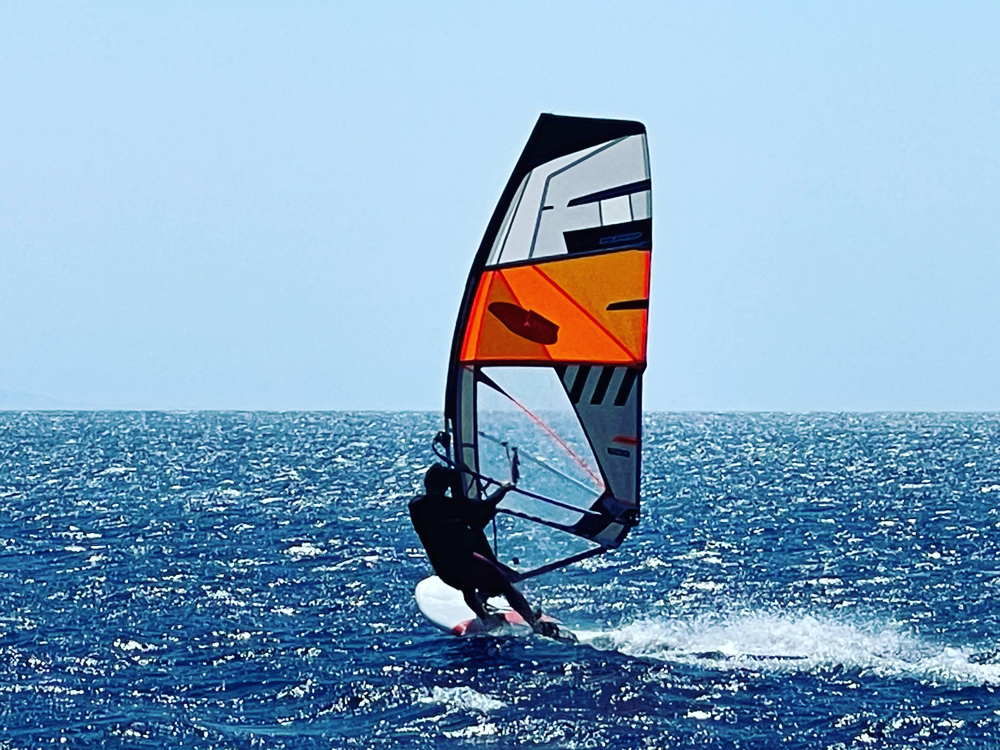
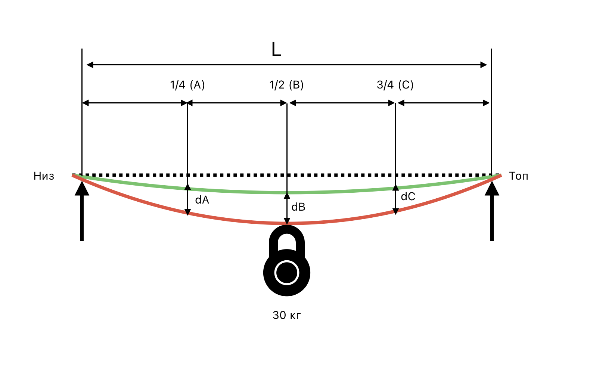
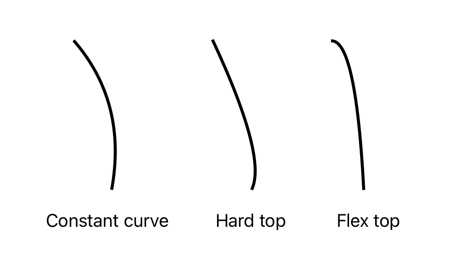

Если мачта совпадает с парусом по длине и диаметру — это не значит что она подходит. Важна жесткость и кривизна.
В идеале покупаем мачту, рекомендованную производителем. Но иногда приходится подбирать мачты других
производителей: unifiber, caas.
В интернете описана методика замера жесткости и кривизны, которая отличается в разных источниках.
Методика
- Мачту кладут горизонтально на 2 опоры, каждая на 5 см от концов мачты.
- Делят мачту на 4 части от опор (в некоторых версиях от концов мачты). Получаем 3 точки:
- 1/4 длины = А
- 1/2 длины= B
- 3/4 длины = C
- Между опор натягиваем леску, это горизонт.
- Под собственным весом мачта немного прогнется. Замеряем прогиб мачты в трех точках. Заносим в таблицу в строку 1.
- Последовательно на каждую точку вешаем груз 30 кг. Заносим в таблицу в строку 2.
- Из строки 2 вычитаем значения 1 и заносим в строку 3 - это и есть значение прогиба.

| Прогиб |
А |
B |
C |
| Без нагрузки |
3 |
5 |
2 |
| С нагрузкой 30 кг |
20 |
180 |
18 |
| Разница (d) |
17 |
175 |
16 |
Жесткость
Меряют в IMCS (Index Mast Check System)
ICMS = (L * L * L) / (dB * 4600 * 4600)
Где:
- L = длина между опорами (длина мачты - 10 мм)
- dB = разница между прогибами в центральной точке (B)
Жесткость в ICMS обычно написана на мачте.
Кривизна
Если с жесткостью более менее все понятно, но с кривизной вообще все запутано.
Условно выделяют:
- constant curve - постоянная кривизна
- hard top - верхняя часть жёстче
- flex top - верхняя часть мягче

Кривизну (англ. Bend Curve Number) меряют так:
Bend Curve Number = (dC - dA) * 100 / dB
Где:
- L = длина между опорами (длина мачты - 10 мм)
- dA = разница в точке 1/4 (A)
- dB = разница в центральной точке (B)
- dC = разница в точке 3/4 (C)
| Кривизна |
Тип |
| < 12 |
hard top |
| 12-14 |
constant curve |
| >14 |
flex top |
Это все для мачт выпущенных после 2010 года, что там было до этого никто не знает.
Ссылки: